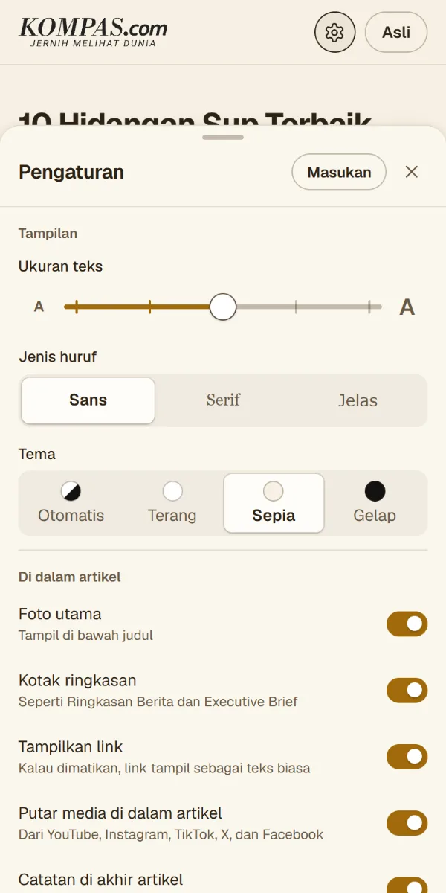
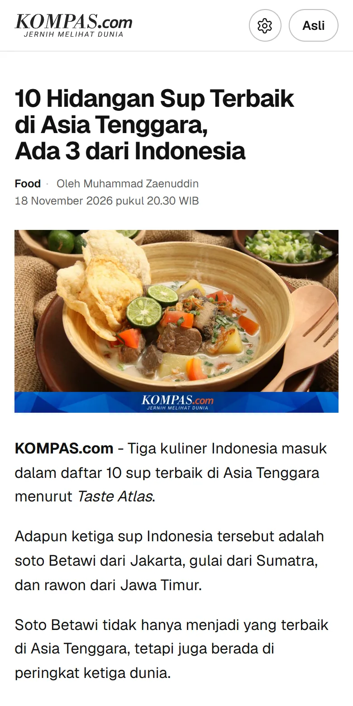
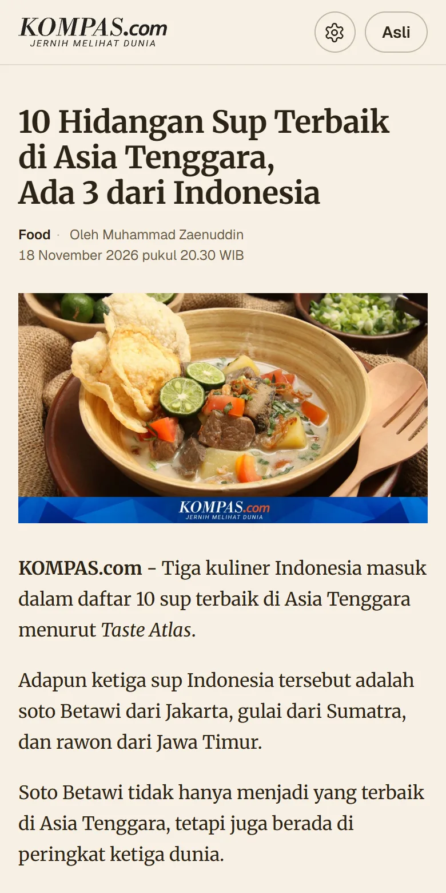
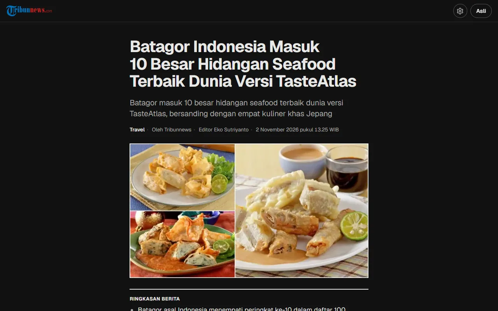
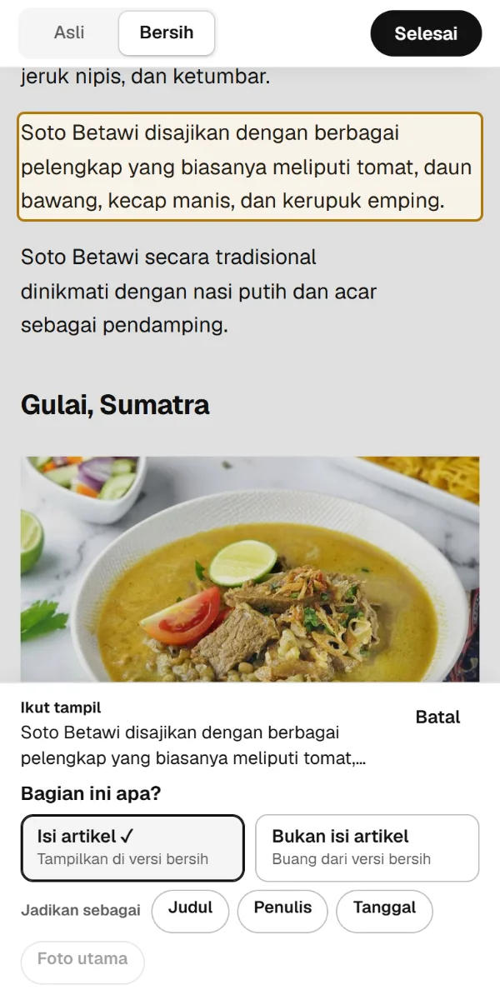

Ukuran huruf, jenis huruf, dan tema bacaan
Lima ukuran teks, tiga jenis huruf, dan empat tema termasuk sepia. Teksnya langsung berubah saat kamu menggeser.

Gratis dan tanpa akun. Artikel dari 28 situs berita tampil sebagai satu halaman yang bersih, tanpa iklan dan tanpa pop-up.


Kamu tetap membuka artikel dari situs aslinya, lalu Sapu Berita merapikannya langsung di perangkatmu. Halaman 2, 3, dan seterusnya diambil dan digabung jadi satu. Usulkan situs lain
Detik, Kompas, Tribunnews, CNN Indonesia, CNBC Indonesia, Liputan6, Kumparan, IDN Times, Merdeka, Suara, Okezone, Viva, iNews, Sindonews, ANTARA, Republika, Jawa Pos, JPNN, Tirto, Bisnis.com, Kontan, Katadata, Pikiran Rakyat, Media Indonesia, Berita Satu, Medcom, Kompas TV, Tribrata News.

Lima ukuran teks, tiga jenis huruf, dan empat tema termasuk sepia. Teksnya langsung berubah saat kamu menggeser.

Mengikuti setelan HP atau komputermu, atau pilih sendiri. Foto dan video tetap tampil apa adanya.
Ada sisa iklan atau paragraf yang hilang? Ketuk bagian tersebut di Atur isi artikel, dan pilihanmu dipakai lagi di situs yang sama.

Di extension, tombol Sapu Berita bisa merapikan artikel dari situs yang belum didukung, lalu mengusulkan situs tersebut.
Chrome versi Android tidak mengizinkan user untuk memasang extension. Edge dan Firefox mengizinkannya, dan Sapu Berita sudah tersedia sebagai extension resmi di kedua browser tersebut. Setelah dipasang, setiap artikel langsung tampil bersih.
Supaya link dari WhatsApp juga langsung tampil bersih, jadikan Edge atau Firefox sebagai browser utama di HP kamu, lewat Setelan → Aplikasi → Aplikasi default → Aplikasi browser.
Di Chrome, Sapu Berita dipasang sebagai bookmark khusus. Bedanya, Sapu Berita tidak berjalan otomatis: kamu menjalankan bookmark tersebut setiap kali membuka artikel.
Cara memakainya: saat artikel sudah terbuka, ketuk kolom alamat, ketik Sapu, lalu pilih bookmark Sapu Berita dari saran yang muncul.
Memakai Kiwi, Lemur, atau browser lain yang bisa meng-install extension Chrome? Sapu Berita juga bisa dipasang dari Chrome Web Store. Buka di Chrome Web Store
Apple hanya mengizinkan extension di Safari lewat aplikasi di App Store, jadi untuk sekarang Sapu Berita dipasang sebagai bookmark. Cukup sekali, sekitar satu menit, dan kamu selalu mendapatkan versi terbaru.
Atau, pasang sebagai bookmark di Safari:
Cara memakainya: saat artikel sudah terbuka di Safari, buka daftar bookmark (ikon buku), lalu ketuk Sapu Berita. Bookmark ini tidak bisa berjalan dari kolom alamat atau di mode Private.
Cukup pasang sekali. Setelah itu, setiap artikel dari situs yang didukung langsung tampil bersih tanpa perlu klik apa pun, dan update-nya terpasang otomatis.
Tambahkan ke Chrome Tambahkan ke Edge Tambahkan ke Firefox
Tombol Chrome juga bisa dipakai untuk Brave, Opera, dan Vivaldi.
Seret tombol di bawah ini ke bar Favorit, lalu klik tombol tersebut setiap kali membuka artikel berita. Kalau bar Favorit belum terlihat, tekan ⇧⌘B. Di browser lain, seret ke bar bookmark.
Gratis. Tidak ada akun, langganan, atau versi berbayar.
Tidak ada. Artikel dirapikan langsung di perangkatmu, tanpa analitik. Sekali sehari, Sapu Berita hanya mengecek update. Baca kebijakan privasinya
Ya. Sebagian besar kodenya ditulis bersama AI, lalu dites dan dirilis oleh pengelolanya. Lihat kodenya di GitHub
Kirim usulanmu lewat formulir masukan, atau coba Sapu Berita di halaman tersebut lewat tombolnya di toolbar extension. Usulkan situs
Bisa. Tombol Asli menampilkan halaman aslinya, dan tombol Sapu mengembalikan tampilan bersihnya.